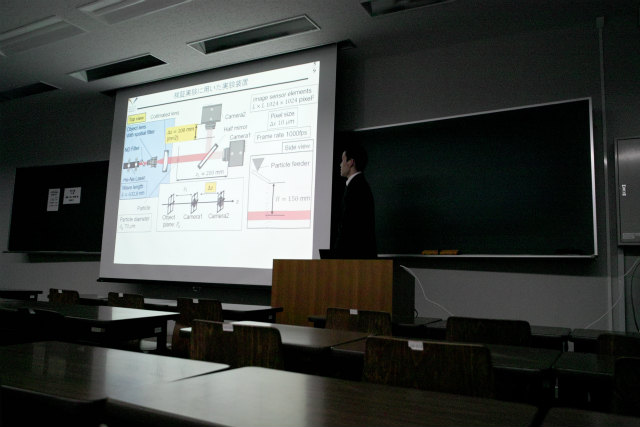
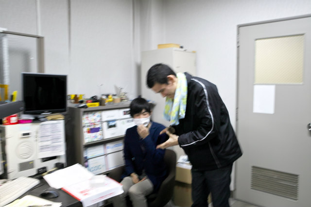
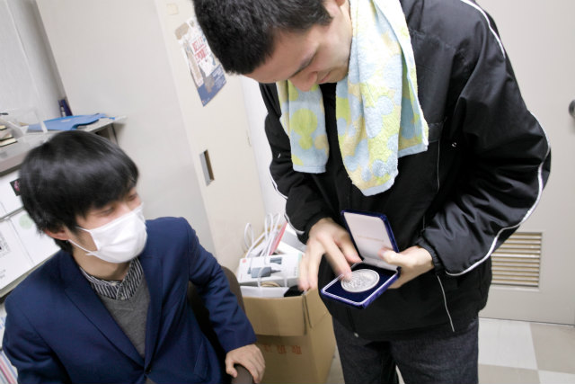
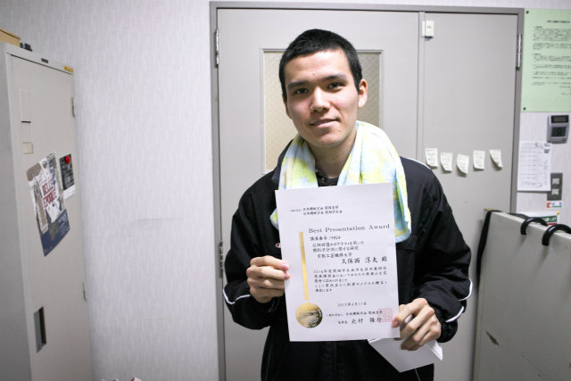
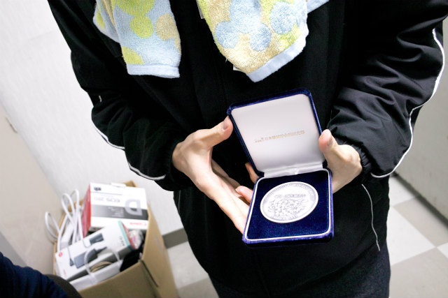
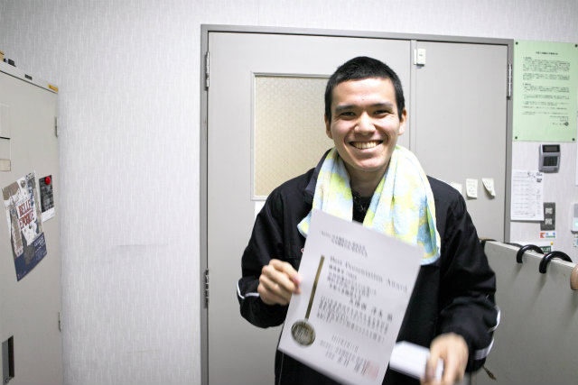
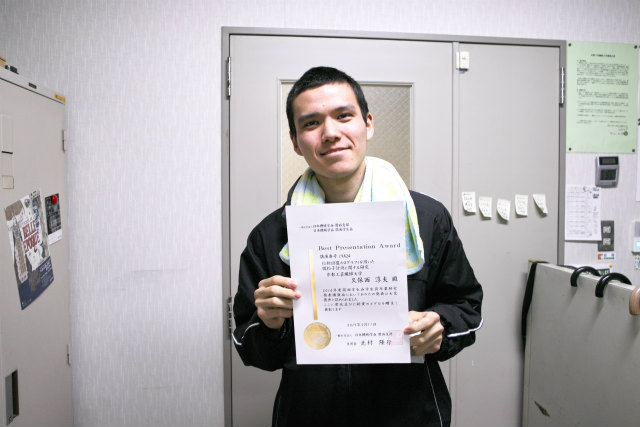
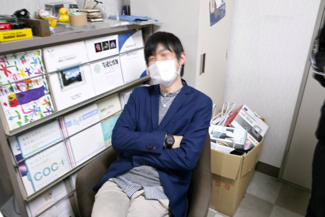

| ・ 久保西くん，BPAの受賞(H29.03.11) | |||
3月に開催された日本機械学会 関西学生会平成28年度学生員卒業研究発表講演会で講演を行ったB4の久保西くんが、BPAを受賞しました。題目は「位相回復ホログラフィを用いた微粒子計測に関する研究」で受賞です．谷くんに続いて2年ぶり4人目です．コツコツ準備していたのが良かったですね． |
|||
|

分かりやすいスライドでした |

谷先輩，届きました | ||
|

メダルと |

あと表彰状も | ||
|

細かい彫り込みが気に入ったようです |

もっと嬉しそうな表情お願い | ||
|

無茶ぶりでした |

オレが育てたｗ | ||